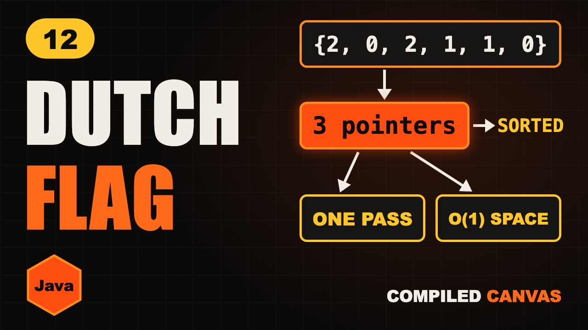

Dutch National Flag Algorithm in Java | Sort 0s, 1s, 2s

The video goes live on 7 Nov 2026 at 6:00 PM IST. The notes are ready now.
?What this episode covers
The Dutch National Flag algorithm sorts an array of only 0s, 1s and 2s in one pass with no extra array. Arrays.sort works but is O(n log n), and counting works but walks the array twice. Three pointers, low, mid and high, split the array into zones and shrink the unknown part until nothing is left.
There are three rules. See a 0: swap with low and move both. See a 1: just move mid. See a 2: swap with high and move high back, but mid stays, because the number that came from the right has never been checked.
We walk through 2, 0, 2, 1, 1, 0 in full, write it in Java, and look at the two bugs that catch almost everyone. The same idea powers three-way partitioning in quick sort.
◎What you'll be able to do
- Two simple ways
- Three zones
- The three rules
- A full walkthrough
- The Java code
!The mistake to watch for
Moving mid after swapping with high, and writing the loop with mid less than high. The last number needs checking too.
✦Key moments tap one to jump there
↗Full transcript
Read the whole lesson
Here's a row of numbers. Only zeros, ones and twos, all mixed up.
Your job is to sort them. But there's a catch.
One pass only. No extra array. And you can't call the sort function.
Three pointers can do this. And it's one of the most asked array questions at big companies.
Welcome back to Compiled Canvas. This is Episode Twelve of our DSA series. Last time, we learned Kadane's algorithm.
Here's the plan. First, the two simple ways, and why they aren't enough. Then the idea of three zones. The three rules. A full walkthrough. And the Java code. A cheat sheet. And an easy quiz at the end.
Let's go.
The first way is to call arrays dot sort. It works, but it takes O of n log n, and it ignores that we only have three values.
The second way is to count. Two zeros, two ones, two twos. Then write them back.
That's O of n, and it's a good answer. But it walks the array twice. The interviewer will ask, can you do it in one pass?
Yes. And the famous answer comes from Edsger Dijkstra. He named it after the flag of the Netherlands, which has three colour bands.
Here's the idea. We split the array into zones, and grow them as we walk.
Zeros go on the far left. Everything before low is a zero.
Twos go on the far right. Everything after high is a two.
And mid is the one that walks. Everything from mid to high is still unknown. Our job is to shrink that unknown part to nothing.
There are just three rules, one for each number. Rule one. If mid sees a zero, swap it with low, and move both forward.
Rule two. If mid sees a one, it's already in the right zone. Just move mid forward.
Rule three. If mid sees a two, swap it with high, and move high back.
But mid stays where it is. This is the trap. The number that just came from the right has never been checked.
Let's walk it. Two, zero, two, one, one, zero. Low and mid are at the start, high is at the end.
Mid sees a two. Swap it with high. High moves back, mid stays.
Mid sees a zero. Swap with low, which is itself. Both move forward.
Another zero. Same rule, and both move forward again.
Mid sees a two. Swap it with high, and high moves back.
Now mid sees a one, then another one. Mid just walks forward, twice.
Mid has passed high, so the unknown part is empty. And it's sorted, in one pass.
Here's the Java code. Three pointers, and that's all the memory we use.
The loop runs while mid hasn't passed high.
A zero swaps with low, and both pointers move.
A one just moves mid.
A two swaps with high, and only high moves. Look, mid has no plus plus here.
Every step shrinks the unknown part by one. So it's O of n time, and O of one space.
Quick pause, before we go further. If you're finding this video valuable, hit subscribe to Compiled Canvas, and turn on the bell. It's free, it takes one second, and it helps me keep making this complete DSA series for you. Alright, back to it.
Two bugs catch almost everyone. Bug one is moving mid after swapping with high. The new number gets skipped.
Bug two is writing mid less than high. Try it with one, zero.
Mid sees the one, and moves to the last spot. Now mid equals high, so the loop stops. And the zero is still in the wrong place.
With less than or equal to, mid checks that last number too. Use that.
Your turn. Pause, and sort two, one, zero with the three rules.
Mid sees a two, so swap it with high. Now it's zero, one, two. High moves back.
Mid sees a zero, so both move. Then mid sees a one, and moves past high. Done.
Now, where else do you use this? Quick sort uses the same idea to split numbers into smaller, equal and bigger.
Anytime you must group things into three kinds in place, think of this flag.
So, here's the whole thing in one cheat sheet. Pause and screenshot this.
Use three pointers: low, mid and high.
See a zero: swap with low, and both move.
See a one: mid moves.
See a two: swap with high, and high moves back.
After that swap, mid stays.
Loop while mid is less than or equal to high.
It's O of n time and O of one space.
Okay, quiz time. Three easy questions. Pause the video, think, and then hit play.
Question one. Mid sees a zero. Which pointers move?
Question two. Mid sees a two. Does mid move?
Question three. What's the correct sign in the loop?
Ready?
Question one: Low and mid, both of them.
Question two: No. The swapped number is unchecked, so mid stays.
Question three: Less than or equal to. The last number must be checked too.
How many did you get right? Tell me in the comments: three out of three, two, or one.
Let's recap. Counting works, but it takes two passes. Three pointers split the array into zones. Zeros go left, twos go right, ones stay. Mid stays after swapping with high. One pass, no extra memory.
Your homework. Solve LeetCode seventy five, sort colors. Then try two eighty three, move zeroes, with the same idea. And then try three twenty four, wiggle sort, if you want a challenge. Hints and Java answers are on compiled canvas dot com.
Next episode, Moore's voting algorithm. We'll find the majority element with one number and one counter.
And don't forget to subscribe to Compiled Canvas, so you don't miss anything new in tech and the job market. Keep coding, stay consistent, and I'll see you in the next one.